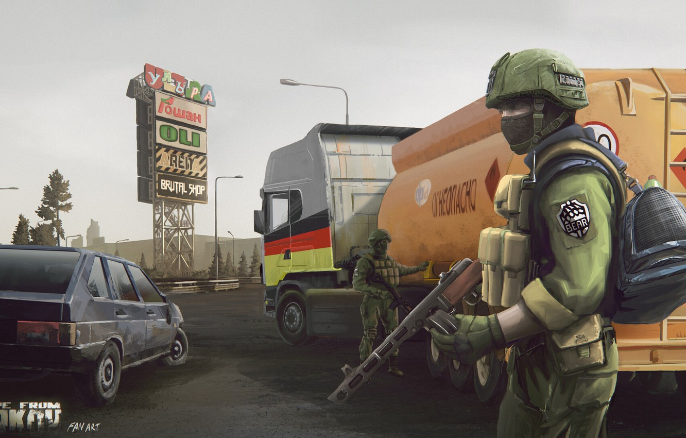
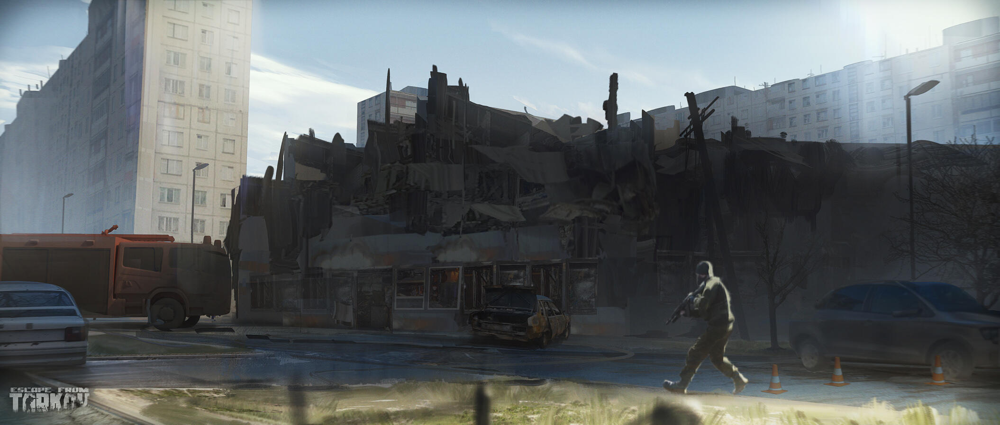

Разработчик игры Никита Буянов объясняет этот феномен просто: «Народ истосковался по серьезным играм».
В начале 2020 года игра российских разработчиков Battlestate Games Escape from Tarkov неожиданно ворвалась на вершину стримингового видеосервиса Twitch
несколько суток была самой популярной игрой среди зрителей, эпизодически попадая на первую строчку и по сей день.
Иногда первая позиция отходит разделу «Общение» или популярным киберспортивным дисциплинам Dota 2 и CS:GO, но общая картина сильно выделяет игру из ряда других.
Популярность игры можно легко оъяснить
Сегодня нет такого многообразия проектов, которые сочетают в себе реализм, атмосферу и продуманность.
Именно механики позволяют Таркову быть на вершине топа.

Это особенная и невероятная игра, аналогов которой нет.
«Тарков» — скорее уникальная в своём роде экосистема, видеоигровой аналог страйкбола, хоррор-игра и самое русское, что когда-либо видела индустрия.
Да, Тарков делает русская студия из Калининграда.
Офис разработчиков возглавляет Никита Буянов.
Многие локации были вдохновлены Санкт-Петербургом.
Например: Развязка - ТЦ Мега. Берег - заброшенный санаторий под Питером.
Тонкости, ньюансы и детали делают Тарков неповторимым в своем роде.
Именно из-за этого Тарков так популярен!